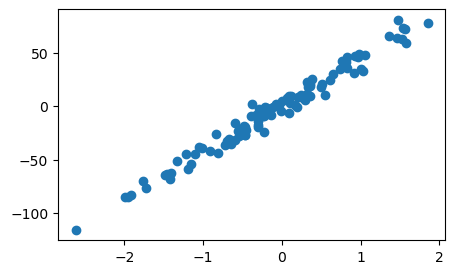
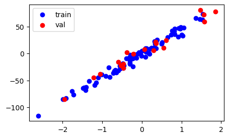
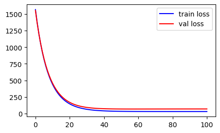
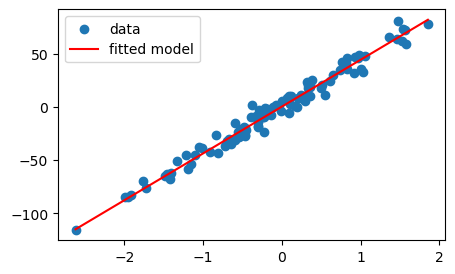

# Import necessary libraries
import numpy as np
import pandas as pd
import matplotlib.pyplot as plt
from sklearn.datasets import make_regression
from pprint import pprintIn this notebook, we will be building a Linear Regression model from scratch to learn and familiarize ourselves with various governing foundational concepts about it. For this, we will use a sklearn.datasets.make_regression function to create a simple synthetic dataset in one variable. We can extend the concepts learned here to build multi-variate linear regression models.
# Generate the data
X,y = make_regression(n_samples=100, n_features=1, noise=7, random_state=42)
# Here,
# X.shape: (n_samples, n_features) = (100, 1)
# y.shape: (n_samples, ) = (100, )
fig, ax = plt.subplots(figsize = (5,3))
ax.scatter(X,y)
plt.show()
We can see that X axis varies from -2 to 2. It implies that our feature space is already normalized.😄
However, if we are dealing with multiple features, then it is common to have different features in different range. For ex. in a dataset of house price prediction, the house area can range from 100-5000 while number of bedrooms typically range from 1-5. To make the linear regression model to give equal importance to all the features, it is a good practise to bring all the features in same range. So, we normalize the features. There are multiple ways to normalize:
- X/max: new feature range is 0 to 1
- X-mean/std: new feature range is -3 to 3 mostly (except outliers)
- (X-min)/(max-min): new feature range is 0 to 1
In Machine Learning, whenever, we want to build any model, we usually split it into 2 sets - train and val. We build algo on train and finetune its hyperparameters to optimise the loss/error function on val set. This step is mandatory. So, let’s build a helper function
def train_test_split(X, y, test_size=0.2, random_state=42):
""" splits the data into train and test sets"""
np.random.seed(random_state)
n = X.shape[0]
if isinstance(test_size, float) and test_size<1:
test_size = int(n*test_size)
elif isinstance(test_size, int):
pass
else:
raise ValueError("test size must be a float/ int")
shuffled_indices = np.random.permutation(n)
test_indices = shuffled_indices[:test_size]
train_indices = shuffled_indices[test_size:]
X_train = X[train_indices]
X_test = X[test_indices]
y_train = y[train_indices]
y_test = y[test_indices]
return X_train, X_test, y_train, y_testX_train, X_val, y_train, y_val = train_test_split(X,y, test_size=20, random_state=0)
print(f'Train size: {X_train.shape[0]}, Test size: {X_val.shape[0]}')
# plot the train and val data to see the split
fig, ax = plt.subplots(figsize = (5,3))
ax.scatter(X_train,y_train, c='blue', label='train')
ax.scatter(X_val,y_val, c='red', label='val')
ax.legend()
plt.show()Train size: 80, Test size: 20
Now, the question is how do we decide the size of val set and how we should create it?
Answer: There is no strict metric on how to decide the size of val set. The most important aspect to consider while creating val set is - it should be a representative of train set. This means, the points in the val set should have a good spread throughout the training data. What does this mean ? - Suppose, all val points (red) occur together and not separated from one another, then it is not a good split. Because this val data does not capture the distribution of train data and since the ultimate use of val data is to optimize the model, then it means we will end up optimizing the model only for a short spread of the data and not the entirety of it. Hence, we perform mostly the random sampling to make sure, we get different and spread-out points that hopefully would be a representative of the entire training data. To achieve this, we can choose 20% of the data or 30% or 5% depending upon the distrubution of the data we are dealing with. Typical value is 15-25% sampled randomly. (But both the val data percentage and sampling method will vary depending upon the nature of the problem)
After creating the splits of train and val data, we can now write code to build a regression model.
(FYI, if normalization of features is required as mentioned above, then normalization is performed after the data splitting. Various normalization constants are calculated from the train split of the data and stored for processing val and real test data that comes during the production stage.)
We are now writing a code for a simplistic model: yhat = wx + b
where w and b are randomly initialized and
optimized by Gradient Descent
In Linear regression, we use mean square error as loss function for optimiztion via Gradient Descent
# hyperparameter
lr = 0.001
epochs = 101
# initialize weights and biases randomly
w = np.random.rand()
b = np.random.rand()
# Gradient Descent
train_losses = []
val_losses = []
for epoch in range(epochs):
# Go through TRAIN data
yhat = w*X_train + b
yhat = np.squeeze(yhat)
# mean square error loss
mse_loss = np.mean((y_train-yhat)**2)
if (epoch)%20==0:
print(f"EPOCH: {epoch}, Train LOSS:{round(mse_loss, 3)}")
train_losses.append(mse_loss)
# step of Gradient Descent
w = w - lr*(yhat-y_train)@X_train
x0 = np.ones((X_train.shape[0],1))
b = b - lr*(yhat-y_train)@x0 # or : b = b - lr * np.sum(yhat - y_train)
## Monitor performance on VAL data
yhat = w*X_val + b
yhat = np.squeeze(yhat)
mse_loss = np.mean((y_val-yhat)**2)
if (epoch)%20==0:
print(f"EPOCH: {epoch}, Val LOSS:{round(mse_loss, 3)}")
val_losses.append(mse_loss)EPOCH: 0, Train LOSS:1567.608
EPOCH: 0, Val LOSS:1552.406
EPOCH: 20, Train LOSS:145.819
EPOCH: 20, Val LOSS:168.799
EPOCH: 40, Train LOSS:40.83
EPOCH: 40, Val LOSS:73.231
EPOCH: 60, Train LOSS:31.699
EPOCH: 60, Val LOSS:68.759
EPOCH: 80, Train LOSS:30.857
EPOCH: 80, Val LOSS:69.459
EPOCH: 100, Train LOSS:30.777
EPOCH: 100, Val LOSS:69.843fig, ax = plt.subplots(figsize = (5,3))
ax.plot(range(epochs),train_losses, c="b", label = 'train loss')
ax.plot(range(epochs),val_losses, c="red", label = 'val loss')
ax.legend()
plt.show()
Usually, you should see decreasing error/loss values. If this does not happen, few things need to be checked: 1. Reduce learning rate, lr and retry 2. Always, check if the shapes of variables are correct. For ex: bias, b shape must be (1,); w: (1, ), mse_loss: (1,), yhat: (num_samples in train/val, ) and so on. I have seen many times, while working with numpy, if you are not careful of matrix multiplication and dot product rules, the shapes of your variables become incorrect causing weird model training. You could also see an up and down behaviour in train loss. For example: If you miss to account for x0 while calculating bias b ➡ it will cause massive shape issues throughout.
print(f"Linear Regression Model: wx+b = {w}*x+{b}")Linear Regression Model: wx+b = [44.0082033]*x+[0.38012626]xmin = min(X); yhat_min = w*xmin+b
xmax = max(X); yhat_max = w*xmax+b
fig, ax = plt.subplots(figsize = (5,3))
ax.scatter(X,y, label = 'data')
ax.plot([xmin, xmax], [yhat_min, yhat_max], c="red", label='fitted model')
ax.legend()
plt.show()
The trained model fits really well visually. But how do we quantify the quality of fit?
Answer: r2-score
I often used to forget the formula for r2-score, until I understood the reasoning behind it and then, I no longer needed to memorize it. I could reproduce the formula within seconds by following pure logic. In fact, I feel this is the best way to also sharpen your data understanding skills. Being able to reason about the data stuff and write it in terms of maths - this is the skill that will make you a data scientist with sharp eyes and mind.
r2-score forumla
Let’s understand the r2-score and derive its formula by asking just basic questions i.e. first principle thinking.
Q. What is the simplest model we could use without any fancy math?
A. use mean i.e. the average as the answer, yhat for any given x
Q. Now, if we use the simplest model, what is the sum of squares of error?
A. np.sum((y-mean)**2)
Q. What is the sum of squares of error from our model?
A. np.sum((y-yhat)**2)
Q. If we have trained a good model, it should be better than baseline (simplest model, where we predict average no matter what X is). That is, sum of squares of error from trained model < sum of squares of error from simplest model. But how much better?
A. 1 - np.sum((y-yhat)2) /np.sum((y-mean)2)
# simplest model
ymean = np.mean(y_train) # use train to calculate the model, where model = mean
SST = np.sum((y_val - ymean)**2) # calculte sum of square of error on val data
print('SST: ', SST)
# trained model
yhat = w*X_val + b
yhat = np.squeeze(yhat)
RSS = np.sum((y_val-yhat)**2)
print('RSS: ', RSS)
# R2-score
r2_score = 1-RSS/SST
print('r2_score: ', r2_score)SST: 37726.247861497875
RSS: 1396.867522387115
r2_score: 0.9629735899653908For simplest model,
model = ymean, sum of square of error is called SST = Total sum of squares
For trained model,
model = wx+b, sum of square of error is called RSS = Sum of square of Residuals
r2_score close to 1 means the model explains the data well.
r2_score ranges from 0 to 1. Can you think what what does r² = 0 mean?